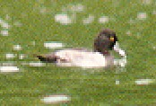
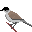
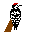
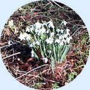
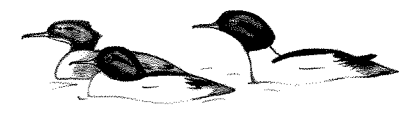
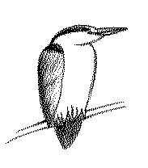
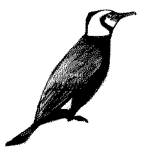
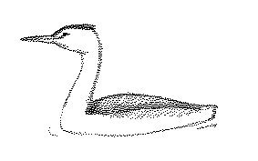

Diary 2000
November 9th 2000

I just got some pictures back from the processors which included an attempt at the Ring Necked Duck seen in September.It was a shame because I saw it well in the morning in bright light, but when I went back with my camera it had become really dull and most pictures were spoilt by camera shake. Still here's one that actually came out anyway.
October 24th 2000
Back from the Isle of May. It's good to see Shovelers at Chard in full plumage again, having shed the rather drab colours of eclipse. A passing Raven was a lucky spot on a quick lunchtime visit.
The Isle of May was a little disappointing as birds were in short supply. Even the usual Blackbirds were missing. There are 5 Heligoland style traps on the island which usually turn up quite a few birds for ringing. On the dullest bird day, 4 rounds of the traps, plus several hours with mist nets at night (for storm petrels) we managed to catch one bird, a Wren.
OK there were highlights, we actually caught a Yellow Browed Warbler at the begining of the week which had been ringed already by the previous weeks ringers. Birds of Prey were reasonable at times as well with Peregrine, Kestrel, Merlin and Sparrowhawk all present. It's strange though, at peak migration time to see so few birds. The expected thousands of Thrushes just didn't happen. A couple of Blackcaps were seen and a single Chiffchaff at the begining of the week were the only warblers. Meantime Portland Bill were reporting things like Pallas Warblers, Dusky Warbler and a strange eastern Lesser Whitethroat. Just the sort of birds that should turn up on the May.
Never mind, the weather was kind to us if not the birds and we saw one of the best rainbows of all times.
September 7th 2000
Sorry I didn't update in August, but I was on holiday for half of that month in the Isle of Man. It's got great scenery. More of a family holiday than birding, but the Choughs were great and also saw Hen Harrier, Peregrine, Hooded Crow, Wheatear and Sandwich Tern.Autumn is hotting up now with Greenshank as the most recent good bird at Chard. I thought I was only going to get a distant view through the drizzle. It was probably just chance, but I tried imitating the call and within a minute the Greenshank flew out over the water within feet of the hide and started feeding in shallow water maybe 10 yards away. Wonderful views.
July 24th 2000
I surprised a Grey Squirrel in the hide today. I thought if I stayed still it would find its way past me, but instead it did a kami kazi dive out of the viewing slots straight into the reservoir.It proved a good swimmer though and was quickly scrambling back up the hide supports looking rather bedraggled but none the worse for its ordeal.
June 21st 2000
An evening visit that looked unpromising with rain in the air, turned into one of the best for a while. For a start the sun came out and made all the birds glow around the edges with that orange evening light. Quite a few birds around, but mostly common ones as expected. Then I checked Jim's Field as I'd spotted a couple of geese there and wasn't entirely sure they were Canadas. After the Lesser White Front, all geese are worth checking out.Sure enough the first goose was a Bar Headed Goose, an exotic looker, but I have seen one here before. The other goose walked into view and that was a Bar Headed as well. Two Bar Headed Geese are an interesting distraction. They're counted as feral geese, that is, they originated from domestic stock and so not potential long distant migrants, but good looking birds.
A few birds were singing, and I was listening to a nearby Blackcap. It was singing the usual song when it suddenly turned into a Willow Warbler's song and then back again. I hadn't heard a Willow Warbler earlier and didn't hear one after. Then I remembered that Blackcaps can sometimes mimic other birds, but this was the first time I had heard it so clearly.
I'm listening now for a repeat of the Blackcap, but all I can hear is House Martins as they swoop around the hide. Except amongst these double note calls, there's a single note call as well. I can't quite place it, it's coming from back in the wood by the sound of it, but it's bugging me, so I walk back down the gangway that leads to the hide and now it's really close. I can just see between the boards into the bushes that overhang the edge of the water.
Just 6 feet away, sat in the bushes is a Kingfisher. This is the closest I've ever been to a Kingfisher, but I'm already wondering if I can use my binoculars. Well no, they don't focus that close, but what if I go back a bit? I put a little distance between me and the bird, but my bins still won't focus. Then I do something that I cannot recommend and start to unscrew the objective lens of one side of my bins. Winding it further and further out until the lens nearly falls off.
But it works, I'm now looking at a Kingfisher through one half of my bins and it actually fills the field of view. I'm looking at the bristles in its feathers! Its back is towards me, so I can see this brilliant blue colour even though it's in deep shade. It stays like this, moving its head around, sometimes looking sideways at me, then suddenly it spins around showing off the orange breast and dives.
I didn't see it go into the water, but I heard the splash. It didn't come back to the same spot and I lost it for a while, but later I saw it flying low over the water past the duck feeding station. A relaxing, yet exciting evening.
June 4th 2000
I arrived back from a trip to South Africa yesterday morning. I got confused for a minute when I spotted a Cuckoo from the train, somewhere near Frome, and thought "No it can't be a Cuckoo because we don't get them in winter". I had just got used to checking the field guide for South African birds and excluding the summer birds, as it is winter there now. Well they call it winter (Sunny all day and about 80 degrees Fahrenheit). Never mind jet lag with its time changes, the season changing overnight is very confusing to birdwatchers.The trip was for business and at rather short notice, so in the end I only got an hour and a half at a local reserve called "Rondebult". Still, that was enough to clock up nearly 20 species that I had never seen before, plus a few that I haven't seen for years like Purple Gallinule.
Best bird? - Probably Black Shouldered Kite, which I watched hovering as well as soaring. A pair of Hottentot Teal with brilliant blue bills came a close second. The ducks were rather good with Southern Pochard, White Faced Duck, the dramatic Yellow Billed Duck, and Redbilled Teal as well.
Strangest bird - Spurwinged Goose, a huge black goose, looking like it's made from a set of badly proportioned parts.
Closest views - Fiscal Shrike, about 3 feet range. A black and white version of Lesser Grey Shrike, common, very tame and rather nice.
Trickiest Identification - The weaver birds gave me a problem until I worked out that Southern Masked Weavers don't actually have a mask in winter (I think).
Best bird seen from Hotel - Spotted Dikkop. Just sat in the grass rather duck like but with that great big Stone Curlew type eye peering out.
Back to more normal things in the next diary entry.
May 13th 2000
The summer birds like Reed Warblers are established now, but it seems to have been very quiet on the migrant front over the last month. Today I satisfied myself with watching the common water birds.I watched a moorhen at close range and reminded myself of the variation in colour which you only see in good light. Far from being another black bird like a coot, the head and neck are a wonderful blue/grey and the back and wings are a chocolatey brown colour, the two divided by a delicate line of pure white feathers on the side. The bill of course is blood red with a lemon yellow tip and extends up the front of the head in that strange 'shield'. As it turns away, there's two great flashes of white under the tail and if you should see the legs, they're almost luminous green with a red garter at the top. So who says they look like coots?
A coot came equally close and proved to be basically black with a white bill, again extending up over the head a little way. The only hint of colour was a dark red eye and a slight pink tinge to the white bill. The coot is nonetheless still a handsome bird looking rather more in proportion than the moorhen which always makes me think its head is too small for its body.
Moorhen and Coot are two birds with many differences, yet frequently mixed up. Just remember, 'Bald as a Coot' refers to the white patch on the front of the head.
April 19th 2000
Yet more rain recently means the water level is still very high. But at least it's possible to get into the hide now (just). Hardly any birds to be seen from the hide though. With the res being so full, the water looked almost deserted with just a few Herring Gulls and I do mean a few.Best birds today were two Willow Warblers working their way through the vegetation which overhangs the water by the hide entrance. A touch of sun showed off their orange legs and good eyestripes. There was a Chiffchaff with them as well, looking browner with dark brown legs and a much less obvious eyestripe.
The last two weeks have been very quiet with no new spring arrivals that I've seen. Mind you with all this rain, viewing conditions have not been good.
April 4th 2000
What was that about spring? Snow yesterday and persistent rain this morning. A rather brief visit today as everything was flooded. The duck feeding station was under water (roll on the "nice weather for ducks" comments). The hide was under water. Waders (the boots not the birds) would be needed just to get to the door of the hide. The path to the east bank was under water and I had popped in wearing my work shoes. I couldn't get near enough to actually see the main part of the res and Greenfinches were the most interesting birds in the hedgerow. I expect there were all sorts of things on the water, I just couldn't see them.April 2nd 2000 

March 16th 2000
More singing Chiffchaffs yesterday and today, but these ones have normal song.More interest on the woodland edges today than on the water. A mixed flock of finches flew into the big oak at the entrance to Rushy Meadow. Turned out it was very mixed with Greenfinch and Chaffinch as expected; Siskin which is really nice to see; Nuthatch which seem to be very visible at the moment; Blue Tit and Great Tit; and a couple of Redwings.
Great Spotted Woodpecker was calling and drumming across the field and singing wrens were everywhere.
March 14th 2000
Spring has arrived! Well there was one singing Chiffchaff at the entrance to the wood anyway. The song was a bit unusual, I cannot find out if this is just a normal variation or one of the subspecies. It goes like this:chaff chaff chaff chaff chaff chaff chaff chiff chaff
Basically very monotonous without the usual ups and downs. I would write a normal song as:
chiff chaff chooee chooee chiff chaff chooee cheff chiff
A Little Egret has become a regular again this month, but there have only been about 4 Herons around. Three Teal were entertaining today with 2 males vying for the attention of one female. Lots of puffing of feathers, throwing heads back and spinning round in circles.
Listen out for Blackcaps in the next couple of weeks, they're often next to be heard after Chiffchaff.
February 17th 2000
Not a day for the water birds, although 4 Teal tucked right into the bank were just about worth searching out. Almost the first bird I saw today turned out to be the star. I was just past the notice board, walking down the path and a small bird flew overhead into the trees. At first I thought it was a tit, but the flight was undulating which made me think of Nuthatch. The bird flying onto the trunk of the tree confirmed it was more likely a Nuthatch, so binoculars swung into action.Surprise of my life to see a bird that I've been looking for, for 3 years at the 'res'. It was a Lesser Spotted Woodpecker, and a male too. It was quite close and a bit difficult to take in all at once. 3 or 4 seconds of staring unbelieving (by me, not him) and he was off again, right over my head across Buttercup Meadow to the trees on the edge of the wood.
Just to make the scene even more surprising, a pair of Great Spotted Woodpeckers also flew over at the same time, taking the very same line across the field. I think the Lesser started out first, but with their faster flight the Great Spots actually reached the trees first. The Lesser chose to land within feet of one of the Great Spots, giving me the more distant, but very clear view of both Great and Lesser Spotted Woodpeckers next to each other. Just in case I'd missed anything, the Lesser called quite clearly with the characteristic KEE KEE KEE... call like a rather distant Kestrel.
Dave Lester, the warden appeared at this point from the wood, having heard the Lesser Spot, but thinking it was a bird of prey. Dave didn't see the bird at that time, but let's hope it stays around long enough for us all to see this cracking little bird.

February 9th 2000

Thought I'd better update although relatively quiet birdwise. Snowdrops are out in the woods now, a promise of spring to come. Yesterday was a good bird of prey day with a female Sparrowhawk crashing through the undergrowth and 2 Buzzards circling low over Buttercup Meadow. Later Lyn reported a Peregrine.Baz has got his site up and running with historic records of the birds at Chard (Only up to the ducks at the moment - keep typing Baz!) See the links on my home page as promised. He's also got lists of plants and insects. There's no dates or numbers though. How many snowdrops were there in 1934 Baz? I guess we'll never know.
January 30th 2000
Not that many birds today, but a gaggle of birdwatchers in the hide. Baz Stevens was there with Duncan Harris (local) and Kevin from Gosport. I was there of course (Kevin Harris, no relation to Duncan) and then we were joined by Dave Helliar.Watch out for a new web site on the history of the birds at Chard from Baz and Duncan. I'll post a link when they get it up and running. They are keen, so I think it's going to happen.
January 27th 2000
I arrived to find most of the water at the south end frozen. Gulls and Ducks were sat on the water rather than in the water today. This cold weather sometimes brings birds in, but has it had the opposite effect this time? No duck apart from Mallard were present, but there was one new bird: a lone Mute Swan.20 Great Crested Grebes still here and concentrated into the open water. 6 Herons today. There seems to be one less each time I come lately.
P.S. Some more duck arrived after my lunchtime watch (or I failed to spot them). 2 Pintail, 29 Teal and 13 Tufted Duck were seen late afternoon. That's annoying because I haven't seen Pintail yet this winter.
January 22nd 2000 Saturday
A wicked wind today meant closing the shutters on one side of the hide. However, that was more than compensated for, with plenty of birds to view. Fortunately I took my scope as an unexpected 50 Common Gulls took some looking through, searching for the elusive Med Gull. No I didn't find one, but it was worth a try.

Bird of the day was Goosander with 3 of them just off the east shore. At first I thought I'd spotted some rubbish on the shoreline. They were half hidden by some branches and that salmon pink colour of the males just didn't look real.
Scanning from left to right I could see a fox half asleep on the shore; a dozen Herons only feet away from him; eight Teal and a Tufted Duck; 50 Common Gulls amongst 200 Black Headed Gulls; plenty of Great Crested Grebes at the far end; and 3 Goosander on the right. All in view at once and a Buzzard floating by as well.
January 14th 2000
Greenfinches and Chaffinches around again, but no bullfinches this time. I flushed a Meadow Pipit from Knapweed Meadow which was a nice surprise.

This is the Heron looking like a giant Kingfisher from a sketch done on the 12th.The water was covered in birds today. Shame most of them turned out to be Black Headed Gulls. There was a Common Gull amongst them as well as the more usual Herring and Lesser Black Backeds.
A Tufted duck broke the monotony of Mallards, but no other ducks of note.
January 12th 2000
Just a quick lunchtime visit today, but pleasantly surprised by 2 pairs of Bullfinches in the hedgerow right by the entrance. Plenty of Greenfinches and Chaffinches around too.

That cormorant spotted on the 8th is still around and it's got a whiter head than any I've seen before. Didn't have long today, but just time to run off a quick sketch.
Still 6 Herons around, trying to sketch them too. One looked like a giant kingfisher.
The Great Crested Grebes were widely spread today and so more difficult to count. 14 in sight at once but maybe more.
January 8th 2000
Near the reservoir entrance, a Nuthatch was doing a strange dance, changing its position on the twig each time it gave a series of rhythmic notes. It reminded me of a clockwork toy, or one of those little jumping spiders.

I caught the last of the evening light tonight. The sun was out when I arrived, making the white necks of the Great Crested Grebes shine out against the dark water. Today nearly all the grebes were at the south end, making them much easier to see and count. I counted 29. A few are already showing spring plumage and beginning to pair off and display.
The cormorant count also came to 29 with one of them showing a really good white head and thigh patch.
Kingfisher was marked up on the board, but I missed that. I thought I was going to miss Little Egret too, but one glided over the trees as the light faded.
Two tufted duck were nice to see, but where are all the other winter duck?
January 3rd 2000
My first trip to the reservoir this year. It was a grey and drizzly day with all the bare branches of the hedgerows dripping with water. Most definitely a WET day.
My first Jay of the year, white rump flashing as I approached the woodland, binoculars still packed away to keep them dry. The entrance to the woodland was buzzing with a mixed flock of tits, two coal tits being especially nice to see. A short trudge through dripping undergrowth and thank goodness the hide was unlocked.
A couple with binoculars were already in the hide and carefully considering two female Mallards that were a paler golden colour than the rest. I checked the ducks out, but nothing rare here. Herring Gulls were calling, giving that distinctive 'seaside' sound and Black Headed Gulls were flying close to the hide. I scanned the shoreline and counted six Grey Herons as I went. All the ducks were Mallards or mallard types. A small flock of Wood Pigeons arrived in the trees at Heron Corner.
I strained to see through the misty rain to the northern end of the water and counted about 20 Great Crested Grebes all concentrated at that end. This was a very peaceful way to spend some time but the increasing rain did not bode well for picking out distant birds. I sat there long enough to hear Goldcrests calling in the woodland and the distant honk of Canada Geese.
Although only mid afternoon, the light levels were already falling away and I felt that I had made a reasonable effort in the conditions. As I left the woodland, a Great Spotted Woodpecker bounded over the meadow with its distinctive 'Chick' call. This was the most pleasing bird of the day for me.
I will be back (in better weather I hope), to take some pictures and do some drawings for this web site.
If anyone has information or observations on the wildlife at Chard reservoir:
please email me: kevin@chardres.totalserve.co.uk